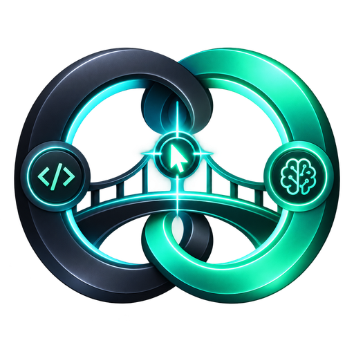

Azure Cursor Bridge
Your Azure models, ready for Cursor and Codex.
Cursor connection
Loading endpoint…
Use this as the OpenAI base URL override in Cursor and the provider base URL in Codex. Keep this computer on while using the bridge.
Codex model source
Switch Codex between your usual OpenAI models and every model configured in this bridge. Changing modes restarts the Codex desktop app and interrupts running tasks.
Reasoning mode and fast mode save as soon as you change them and apply to the next request. Higher effort can take longer and use more tokens.
These are the defaults for bare model names. A client can still choose per request, and its choice wins: effort-suffixed names in Cursor (e.g. bridge-claude-opus-max), or Codex's own reasoning selector, which Codex always sends. See “Control reasoning effort” under Docs.
Full context is available through the bridge. To trim old tool output and history before it goes upstream, turn on the bloat remover in Settings.
Azure and custom models
Edit Azure Astra, Azure Sol, and Azure Opus here to set a local tokens-per-minute budget and maximum output. Their context windows are fixed to the models' published capabilities. Add other deployments below. With a TPM set, requests that would exceed it wait in a queue until they fit instead of failing (see Usage & cost → Rate-limit queue). A TPM setting only paces traffic through this bridge; it cannot raise your Azure quota, which may be shared with other clients or deployments. Set TPM to 0 to skip the queue entirely.
| Id | Deployment | Protocol | Context | Max output | TPM budget | Default effort | Actions |
|---|
Claude account
Models on the Claude CLI protocol run locally through the Claude Code CLI using your Claude subscription — no Azure involved. Client tool calling (Cursor agent mode, Codex) is supported through structured tool-call emulation; Claude Code's own local tools stay fully disabled.
———One plan is used at a time. Your Team and personal plans are separate logins: use “Sign in to another plan” once and pick the other account or organization in the browser. After that, switching is one choice in the list above and applies from the next request. Switching never signs Claude Code out.
ChatGPT account
Models on the ChatGPT plan protocol run locally through the Codex CLI using your ChatGPT sign-in (Plus, Pro, Business…) — no Azure involved. Every Codex tool is switched off for bridge requests, so they can never run commands or read files on this computer; client tool calling (Cursor agent mode, Codex) works through the same emulation as Claude. Because a ChatGPT plan is personal, these models only accept the bridge owner key, not guest keys.
———One plan is used at a time. To use another ChatGPT plan (for example a work Business plan next to your personal Pro plan), use “Sign in to another plan” once and pick that account or workspace in the browser. After that, switching is one choice in the list above and applies from the next request. Switching never signs the Codex app out.
Public URL (Cloudflare)
Cursor reaches the bridge from the internet, so the bridge publishes a public URL through Cloudflare. Choose how:
—Your Cloudflare tunnel
How to create one (free, about 5 minutes)
- In the Cloudflare dashboard open Zero Trust → Networks → Tunnels and choose Create a tunnel → Cloudflared.
- Name it, then copy the install command shown for any operating system. You can paste the whole command below; the bridge picks out the token.
- Under Public hostname, add a hostname on a domain you manage in Cloudflare (for example
bridge.example.com), service type HTTP, URLlocalhost:17834. - Enter the hostname and token below and save. There is nothing else to install: the bridge ships with cloudflared.
A new hostname or token reconnects the public URL, which interrupts requests in flight through it. The token is stored encrypted with your operating system's keystore.
Bridge
—Changing the port restarts the bridge and its public URL, which interrupts requests in progress. The bridge keeps serving after you close this window.
Tools
Claude models run through the Claude Code CLI and ChatGPT-plan models through the Codex CLI. Both are found automatically; enter a location only if yours is installed somewhere unusual.
——Bloat remover
Cursor and Codex resend the whole conversation on every turn, and most of it is old tool output: file dumps, logs, repeated reads. The bloat remover trims what is older before it goes upstream, so requests use fewer tokens. It never touches the system prompt, the tool definitions or your newest turns, and if anything goes wrong the request simply goes through untrimmed.
Higher levels save more tokens, but the model may lose details from earlier in the conversation. Each request's breakdown on the Requests page shows how much was removed. Summaries count as normal requests (client “Bloat remover”).
Local database
Everything the bridge records lives in one SQLite file on this computer. Nothing is stored anywhere else.
———Clear or reset to defaults
Your owner key is kept; rotate it under Access keys. Clearing Azure keys restarts the bridge, which interrupts requests in progress.
Endpoint details
——Authorization: Bearer <owner key or guest key>—Routes: GET /health (no auth) · GET /v1/models · POST /v1/chat/completions · POST /v1/responses. Azure models: azure-astra (GPT-6 Astra), azure-sol (GPT-6 Sol), and azure-opus (Claude Opus 5). Add an effort suffix to pick reasoning per request — azure-astra-low, azure-sol-high, azure-opus-max, etc. (low / medium / high / xhigh / max). Bare model names use the Reasoning mode saved above; a client-sent reasoning setting (Codex) is honored too.
Connect Cursor
- Cursor Settings → Models → API Keys: enable OpenAI API Key and paste the bridge key (use “Copy bridge key” above).
- Turn on Override OpenAI Base URL and paste the public base URL (use “Copy base URL” above).
- Add bridge model names
azure-astra,azure-sol, andazure-opusin Cursor, then pick one in chat. - To control reasoning from Cursor's model picker, add effort-suffixed names like
azure-astra-highorazure-opus-max— the suffix overrides the bridge's default effort for that request.
Connect Codex
In ~/.codex/config.toml, point the provider at the bridge and select a bridge model:
Set the AZURE_CURSOR_BRIDGE_API_KEY environment variable to the bridge key.
Claude CLI models — names & effort
These models run through the local Claude Code CLI on your Claude subscription. Use them from any client exactly like the Azure models — same base URL, same bridge key. The bridge- prefix avoids clashing with clients' own built-in Claude model names (Cursor intercepts bare claude-* names). Model names:
bridge-claude-fable— Claude Fable 5.1 (most capable)bridge-claude-opus— Claude Opus 5.5 through the local Claude CLI (azure-opusremains the separate Azure Opus 5 deployment)bridge-claude-sonnet— Claude Sonnet 5bridge-claude-haiku— Claude Haiku 4.5 (fastest)
Effort works like every bridge model — suffix the name (bridge-claude-opus-max, bridge-claude-haiku-low), send a client reasoning setting, or rely on the model card default. Opus 5.5 uses adaptive thinking at every effort level; low / medium / high / xhigh / max control its depth. Other Claude CLI models use thinking-token budgets: low = thinking off, medium = 4,096, high = 16,384, xhigh = 32,768, max = 63,999.
Tool calling: client tools (Cursor agent mode, Codex) work via emulation — the bridge passes the client's tool schemas to Claude in the system prompt with a strict call format, converts Claude's calls into standard OpenAI tool_calls, and feeds results back on the next request. One tool call per reply; Claude Code's own local tools are always disabled for bridge requests.
Requirements & limits: the Claude CLI must be installed and logged in on the bridge machine (Overview → Claude account). Usage draws on the subscription of the account marked In use there, including requests made with guest keys.
Switching accounts: Overview → Claude account lists every saved Claude account with its email, organization and plan. “Add another Claude account” signs a new one in (for example a personal plan next to your Team plan) without touching Claude Code's own login; Use switches the bridge to it from the next request, no restart needed.
ChatGPT plan models — names & effort
These models run through the local Codex CLI on your ChatGPT sign-in. Use them from any client with the same base URL and the owner bridge key (guest keys are refused because ChatGPT plans are personal). Model names:
bridge-chatgpt-astra— GPT-6 Astrabridge-chatgpt-sol— GPT-6 Solbridge-chatgpt-luna— GPT-6 Lunabridge-chatgpt-5-6-sol,bridge-chatgpt-5-6-terra,bridge-chatgpt-5-6-luna— GPT-5.6 Sol / Terra / Lunabridge-chatgpt-5-5— GPT-5.5
Effort works like every bridge model (suffix such as bridge-chatgpt-astra-high, a client reasoning setting, or the model card default) and is passed to the model as its reasoning effort. GPT-5.5 tops out at xhigh, so max is lowered to xhigh for it.
Safety & limits: each request runs Codex with every tool switched off, a read-only sandbox, an empty working folder and without your Codex settings or MCP servers; if Codex ever tried to run a command, change a file or search the web, the run is stopped and the request fails. Replies arrive in one piece rather than streaming word by word. Usage counts against the Codex limits of the ChatGPT plan marked In use under Overview → ChatGPT account. That panel shows the signed-in email and plan; “Add another ChatGPT account” signs in a second account (for example a work Business plan next to a personal Pro plan) without touching the Codex app's own login, and Use switches the bridge to it from the next request.
Fast mode (priority processing)
Fast mode sends a request to Azure's priority processing tier (OpenAI calls it "fast mode"): lower latency and higher output speed, billed at a higher rate. On Azure it is currently offered for GPT-6 Sol (azure-sol) on Global or US Data Zone standard deployments — not for GPT-6 Astra, and not for the Claude models.
- App toggle — Overview → the model's card → Fast mode (saves immediately). Applies to every request for that model.
- Client setting — a client that sends its own
service_tierwins over the toggle:fastorpriorityturns fast mode on for that request,defaultturns it off (Codex's fast toggle uses this).flexandautoare ignored because Azure rejects flex for these models.
Azure may quietly serve a fast request at standard speed (and standard price) if traffic ramps up more than 50% within 15 minutes or during peak load. The Requests page shows what actually happened: ⚡ fast or fast requested, Azure served standard. Cost estimates apply the Fast mode × multiplier from Usage & cost only to tokens Azure really served fast. Fast mode uses the same TPM quota as standard.
Control reasoning effort
The Azure models support five reasoning levels: low, medium, high, xhigh and max. Higher levels think longer and use more output tokens. There are three ways to choose, and the most specific one wins:
- Effort in the model name (strongest) — pick a suffixed model such as
azure-astra-low,azure-sol-maxorazure-opus-high. This is how you control effort from Cursor's model picker. Works from any OpenAI-compatible client. - The client's own reasoning setting — Codex has a native effort selector next to the model name and sends your choice with every request; the bridge honors it. API callers can send
reasoning_effort(chat) orreasoning.effort(responses). - The bridge default (weakest) — the Reasoning mode dropdowns above apply when a bare model name is used and the client sends no preference. This is what Cursor's bare
azure-astrauses.
Every request's resolved effort is shown in Recent requests below, so you can confirm which level actually ran.
Test from a terminal
Azure upstream key & versions
The bridge authenticates to Azure with the key shown under “Azure upstream key”. Keys are stored DPAPI-encrypted per version in the bridge state folder; nothing is kept in plain text. Reveal decrypts and shows a key, Test against Azure sends one tiny real request (a few tokens) to confirm Azure accepts it, Save as new version stores a pasted key as the next version and activates it, and Activate on an older version reverts to it. Activation rewrites the key file and restarts the proxy, so the change applies to the next request. The active version can never be deleted.
Cost estimation
The bridge records exact token usage (input, cached input, output) for every request into daily totals, and multiplies them by the rates you save under “Usage & cost”. Cost per request = fresh input × input rate + cached input × cached rate + output × output rate (rates are per 1 million tokens). Azure serves repeated prompt prefixes from its cache at a lower rate, which is why cached input is priced separately — enter the cached rate from your Azure pricing page, or the full input rate if you prefer a conservative estimate. Once rates are saved, each row in Recent requests also shows its estimated cost. These figures are estimates based on the rates you entered; your Azure invoice is authoritative.
Guest keys & owner key rotation
The owner key is stored in the bridge config and never changes on its own — it is permanent until you press Rotate in “API keys & access”. Rotating invalidates the old value on the next request and copies the new one to the clipboard; afterwards paste it into Cursor (as the OpenAI API key) and update the AZURE_CURSOR_BRIDGE_API_KEY environment variable for Codex.
Guest keys are additional keys for the same endpoint with limits you control: an optional expiry set at creation, an on/off switch, Reset (new value, old one dies instantly), and Delete. The proxy re-checks keys on every request, so all changes are immediate — no restart needed. Each request in Recent requests shows which key authenticated it, with a per-key request counter in the table above.
Bloat remover — trimming long conversations
Settings → Bloat remover trims what Cursor and Codex resend on every turn before it goes upstream. Small only tidies older tool output (colour codes, blank and repeated lines, exact duplicates). Medium, High and Aggressive shorten tool results, replies and pasted text that are older than the last 6, 4 or 3 turns, keeping the start and end of each. Deep also has a model you choose summarize the early conversation, 6 turns at a time; each block is summarized once and cached, so later requests reuse it.
The system prompt, tool definitions and newest turns are never changed, and no tool call is separated from its result. Shortening older messages only changes the part of the prompt that was already old, so Azure's prompt cache keeps working for the rest. Each request's breakdown shows what was removed. If anything fails, the request goes through untrimmed.
How the endpoint works
The bridge runs locally (port 17834 by default, changeable in Settings) and translates OpenAI-style requests to your Azure deployments, your Claude subscription (Claude CLI) or your ChatGPT plan (Codex CLI). Cloudflare publishes it on the internet for Cursor: with your own Cloudflare tunnel at a permanent hostname, otherwise at a temporary trycloudflare URL that changes on every start. Choose between them, or turn the public URL off, in Settings → Public URL. The tunnel token is stored encrypted with the OS keystore.
All data stays in one local SQLite database. Settings → Local database shows where it is, how much history is kept, and lets you clear any part of it or reset it to defaults.
Test playground
Send a real request through the bridge to verify the endpoint end to end. Requests use your Azure quota and appear under Recent requests.
API keys & access
The owner key is permanent until you rotate it. Guest keys share the same endpoint but are controlled by you: give them an expiry, turn them off and on, reset their value, or delete them — every change applies to the very next request. Recent requests show which key each request used.
| Label | Key | Status | Expires | Requests | Actions |
|---|
Azure upstream key
The Azure endpoint and API key the bridge uses upstream. Each version snapshots both together — change the key, the endpoint, or both, and revert to any version to restore that exact pair. Keys are stored encrypted with the OS keystore. Saving or activating a version restarts the proxy automatically so it takes effect immediately.
——| Version | Added | Key | Endpoint | Note | Status | Actions |
|---|
Rate-limit queue
Models with a tokens-per-minute budget never fail on it: a request that doesn't fit waits until it does, while smaller requests that fit go straight in. After waiting 10 seconds, the oldest request gets priority, so nothing starves. If Azure itself throttles, the model's queue pauses for the time Azure asks. Models without a budget skip the queue entirely.
Queue history
| Model | Period | Requests | Had to wait | Avg / max wait | Went ahead of a waiter | Azure throttles |
|---|
Usage & cost
Token totals for everything that passes through the bridge, bucketed per day. Enter your Azure rates in US dollars per 1 million tokens (from the Azure portal / your agreement) and the bridge estimates cost — estimates, not invoices. Counting starts from when this feature was added.
| Period | Requests | Tokens in (cached) | Tokens out | Est. cost |
|---|
Daily history
Per-day totals and estimated spend for the last 30 days, most recent first.
| Day | Requests | Tokens in (cached) | Tokens out | Est. cost |
|---|
Recent requests
Click a request to see what made it up — where it came from, scaffolding vs conversation, Azure cache hits — and analyze it with AI. API keys are never logged; short prompt previews are kept locally on this computer for the breakdown.
| Time | Source | Model | Result | Tokens in (cached) / out |
|---|